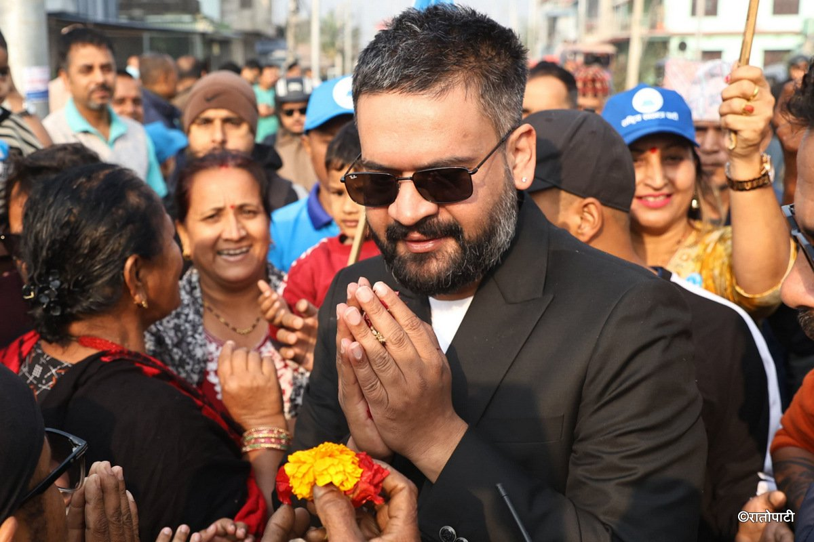

Listen to logic, choose a good leader!
❤️
The Rastriya Swatantra Party (RSP) fundamentally disrupted Nepal's political status quo by aligning with the visionary Balen Shah, positioning him as their future prime ministerial candidate to directly challenge the "old guard" of corrupt politicians. By uniting Balen Shah’s proven record of administrative action with the RSP’s mandate for good governance, the party offers a radical departure from the factionalism of the past. Their alliance is built on a commitment to institutional integrity, transparency, and the pursuit of a stable five-year government—a milestone Nepal has never achieved in its democratic history. This partnership represents a bold promise to replace long-standing misrule with a youth-led, result-oriented vision for a prosperous and stable nation.
The RSP and Balen Shah focused on grassroots connectivity rather than massive rallies. Their 'Door-to-Door' campaign allowed them to hear the real problems of the citizens.

Focusing on skill-based learning and digitizing government school records.
Ensuring basic health services are accessible at the local ward level.
Focusing on pothole-free roads and systematic urban planning.
During the election, several false narratives were spread to discredit the independent movement: